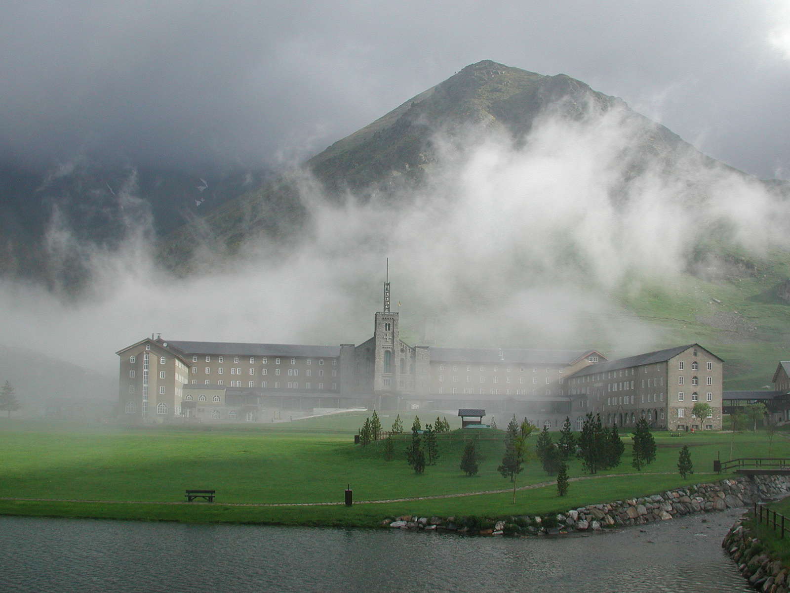
Vall de Núria, Cataluña
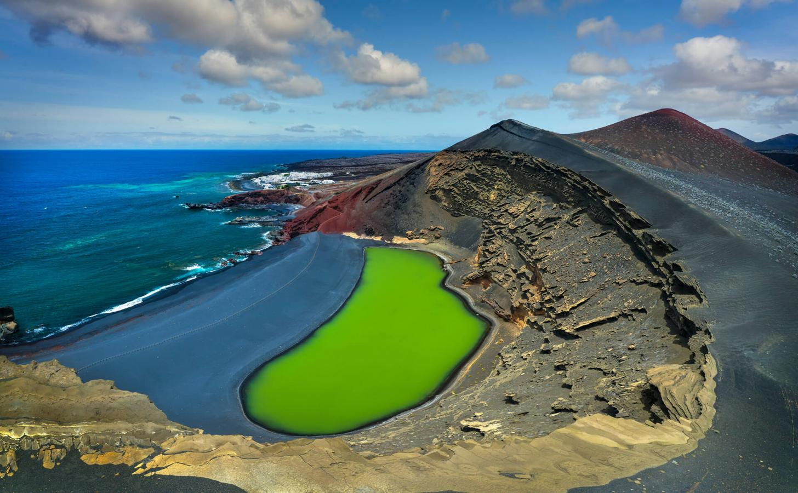
Charco Verde, Lanzarote
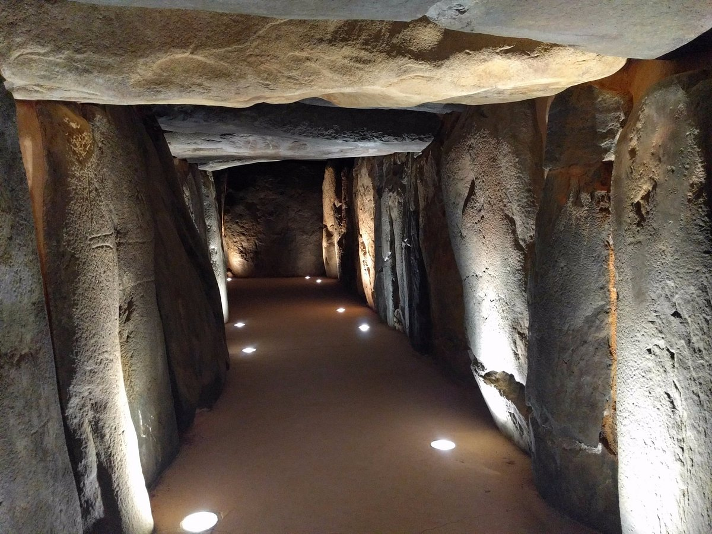
Dolmen de Soto, Huelva, Andalucía
Parque natural de las Lagunas de La Mata y Torrevieja, Alicante, Valencia
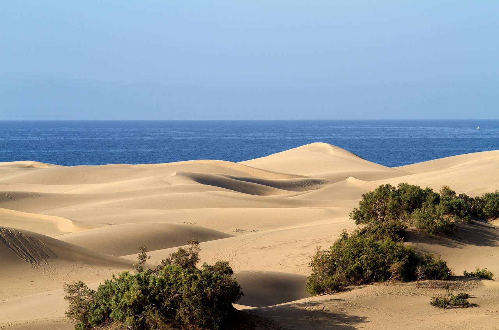
Dunas de Maspalomas, Gran Canaria
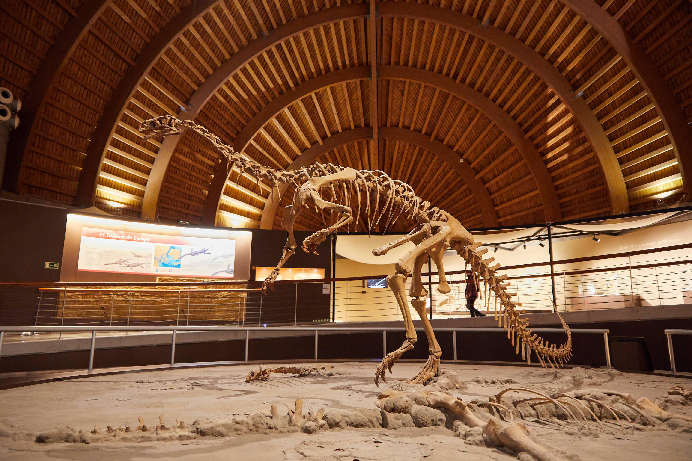
Museo del Jurásico, Asturias
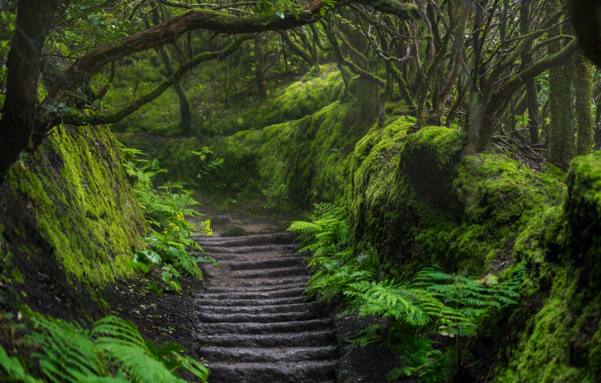
Parque Rural de Anaga, Tenerife
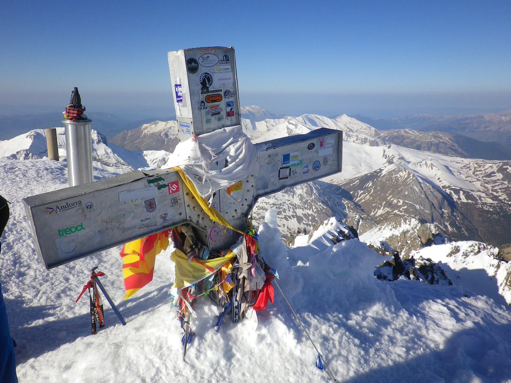
Pico Aneto, Huesca, Pirineos
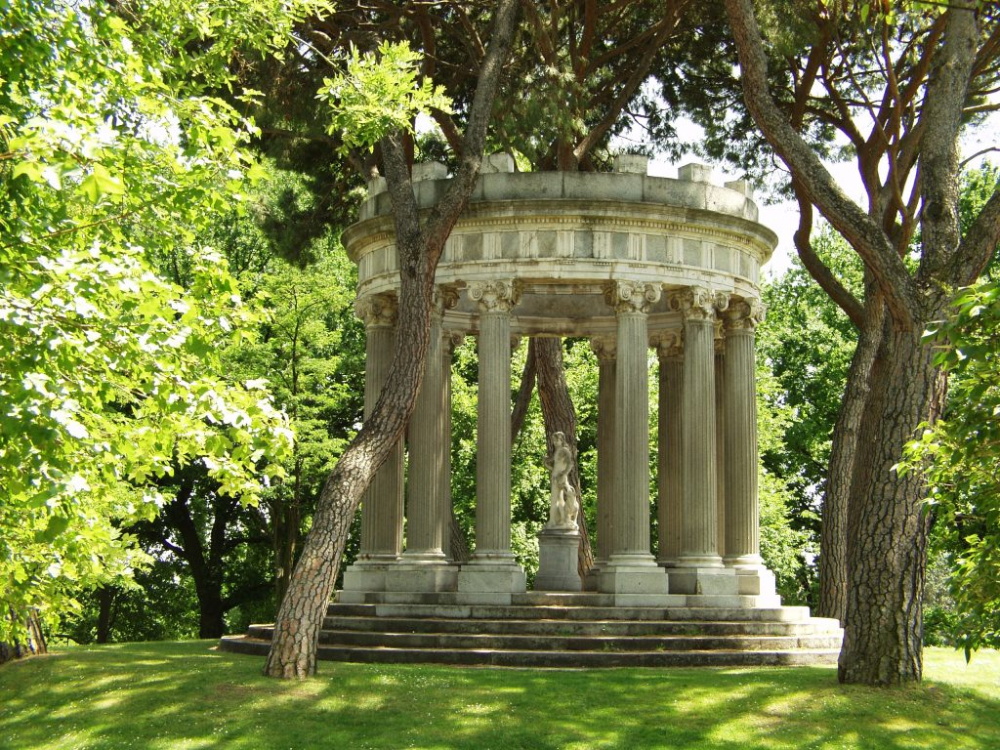
Jardín El Capricho de la Alameda de Osuna, Madrid
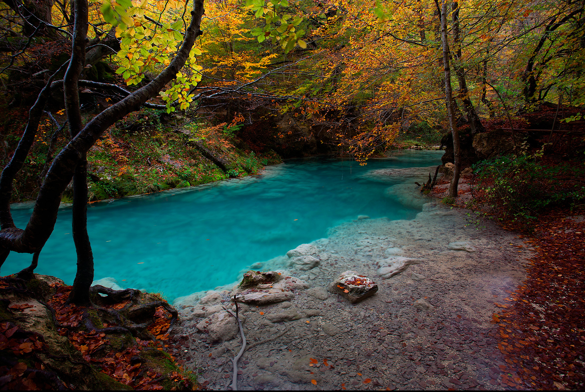
Nacedero de Urederra, Navarra
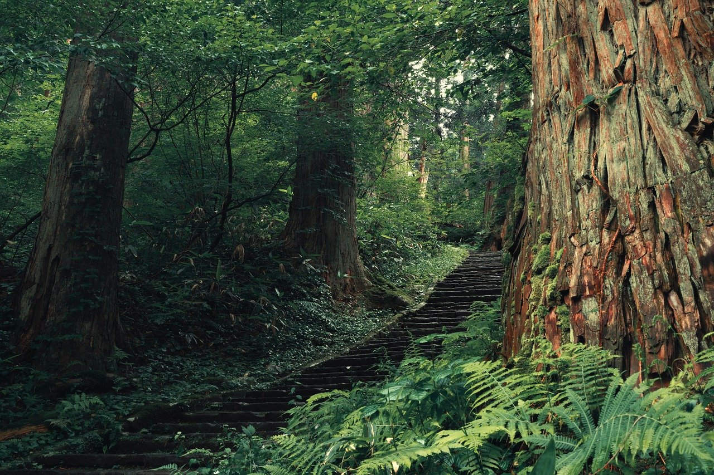
Bosque del Cedro, La Gomera
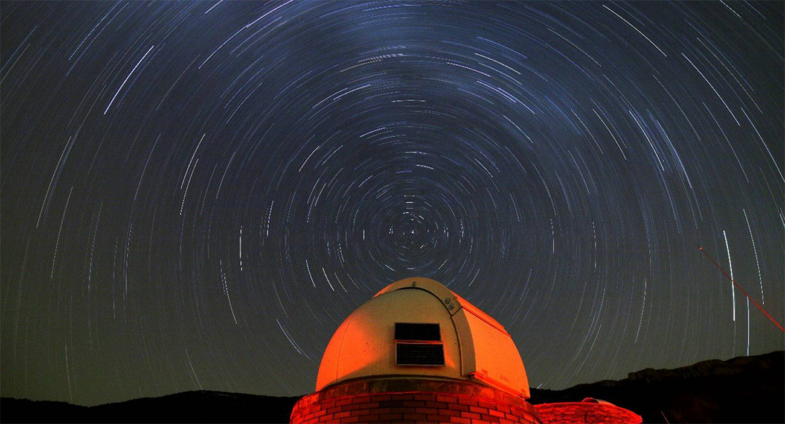
Parque Astronómico del Montsec, Cataluña
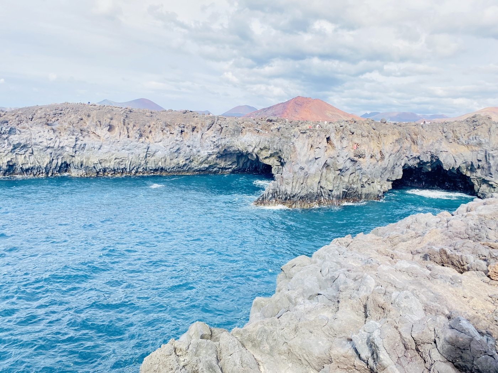
Los Hervideros, Lanzarote